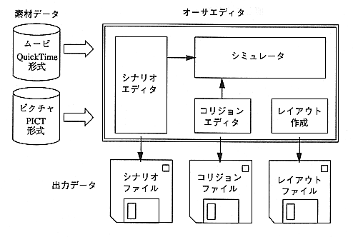

author editor are as follows.
- Integrate multiple material data and create one scenario.
You can specify the display timing of the - object.
Edit the collision frame pasted to the - object.
- A collision frame is complemented between movie frames.
- Function that defines the action execution content.
- Function to simulate scenario data and collision data.
- Function to output information (layout file) that interleaves object data and collision data.
Figure 2.1 shows an image of the author editor.

Figure 2.1 Author Editor image